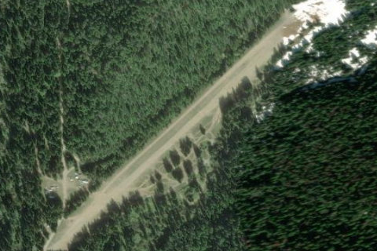

HORSE HEAVEN / HORSEHAVEN, ID
ID

Aerial imagery source: Esri, Vantor, Earthstar Geographics, and the GIS User Community
View original source (Shortfield) →
| State | ID |
|---|---|
| Elevation | 3,050 ft |
| CTAF | 122.9 |
| Coordinates | 47.8269, -116.4973 |
Notes
[shortfield] Location Overview Horse Heaven sits along Iron Creek in the North Fork Coeur d'Alene River area near Athol/Fernan, Idaho, within the Idaho Panhandle National Forests' Fernan Ranger District. It's a privately owned, unpaved backcountry strip reached by forest road (Forest Road 108 along Fernan Lake, then up Fernan Creek Road), surrounded by dense timber in classic North Idaho mountain terrain. Camping & Recreation There are no developed facilities at the strip itself, but the open, grassy field it sits in serves as a wide-open playground reached via a popular groomed snowmobile trail that follows the scenic North Fork of the Coeur d'Alene River, with nearby Crooked Ridge offering views of Montana's Cabinet Mountains on clear days. In summer, dispersed camping happens near the strip, though according to more recent reports the area has increasingly become a magnet for ATV and dirt-bike riders rather than pilots or backpackers. Wildlife such as deer, elk, and moose are occasionally seen passing through. Notes & Warnings This is not an active, sanctioned airstrip for general aviation use — the FAA has closed it to small aircraft due to its dangerous condition. Field reports describe it as a strip that may serve as a good emergency landing site, currently usable only by high-performance STOL/backcountry aircraft with large tires due to rocks, sticks, and debris on the surface, and note it is privately owned. Multiple visitors report the strip has been taken over by ATVs and motorcycles, with the strip and nearby creek beds being damaged by recreational vehicle traffic against the owner's wishes, though one pilot flying an experimental Super Cub found the strip in fairly good shape despite that use. Bottom line for pilots: treat it as closed/unmaintained, not a fly-in destination — any landing here should be approached with extreme caution, if at all, and only in genuine emergencies. History Horse Heaven's landing strip was built during World War II as a contingency — a place to hide U.S. fighter aircraft in case the country needed to retreat from a feared Japanese invasion of the Pacific coast. Like many small wartime and early backcountry strips scattered across Idaho's mountains, it fell out of official use in the postwar decades as aviation infrastructure modernized and safety standards rose. It has since drifted between quiet obscurity and periodic rediscovery — noted occasionally in backcountry aviation forums and strip databases as one of Idaho's "lost" airfields — while its surrounding meadow has taken on a second life as a winter snowmobiling waypoint and, more recently, informal ATV recreation area, a shift its private owner has reportedly resisted.